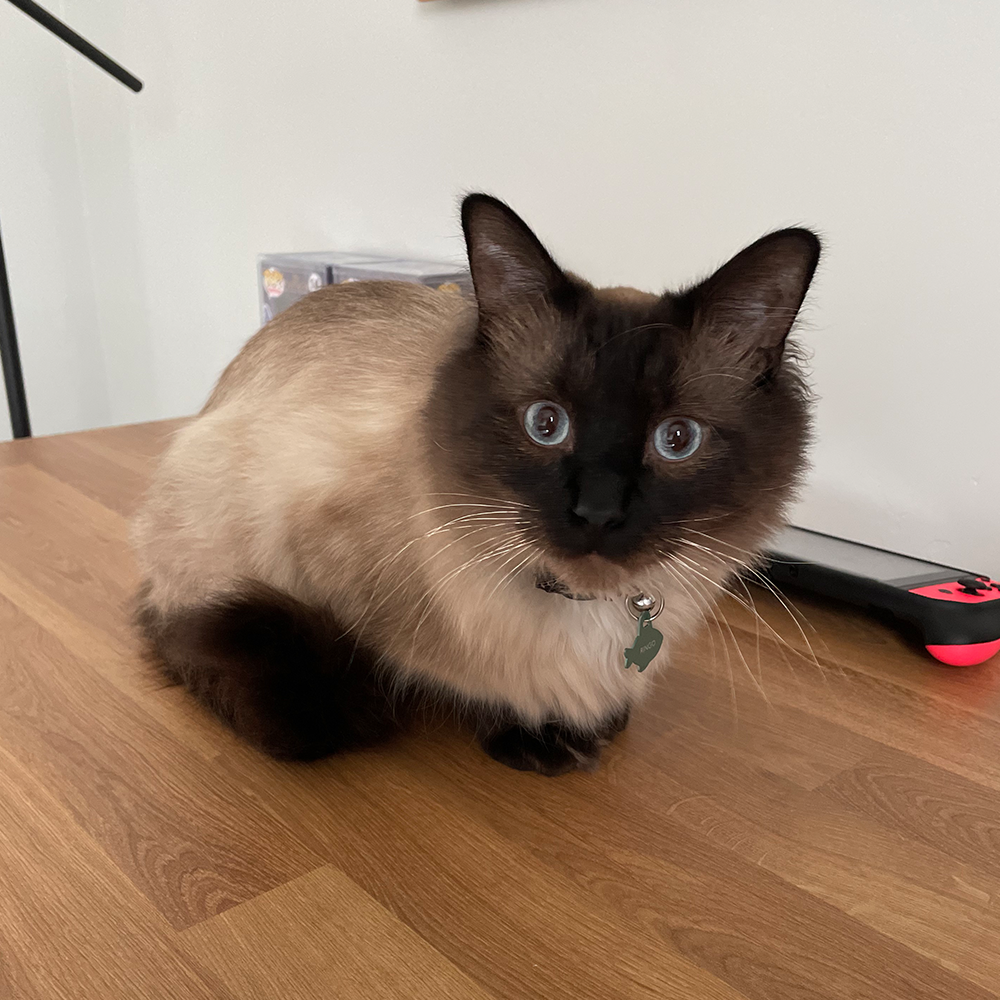
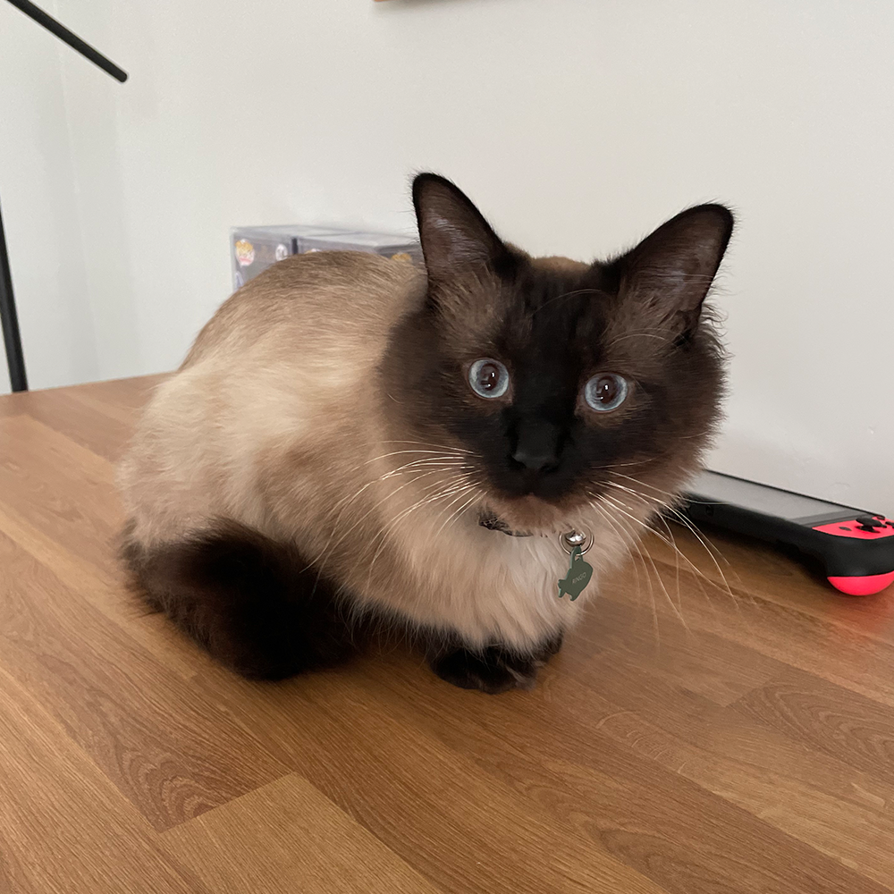
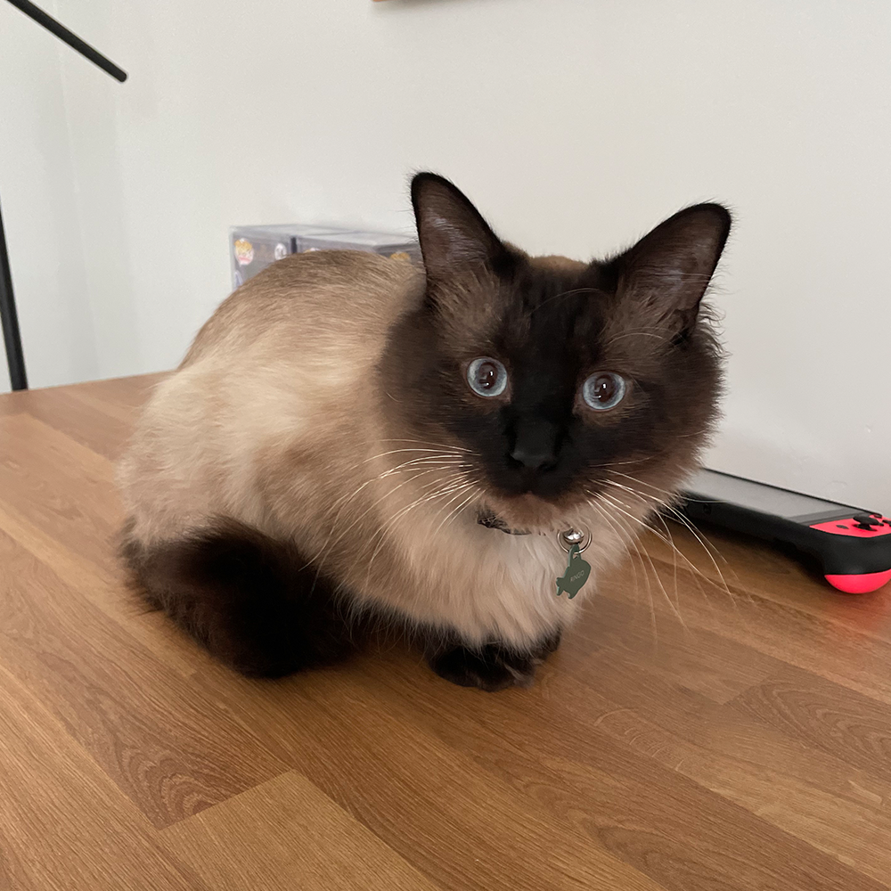
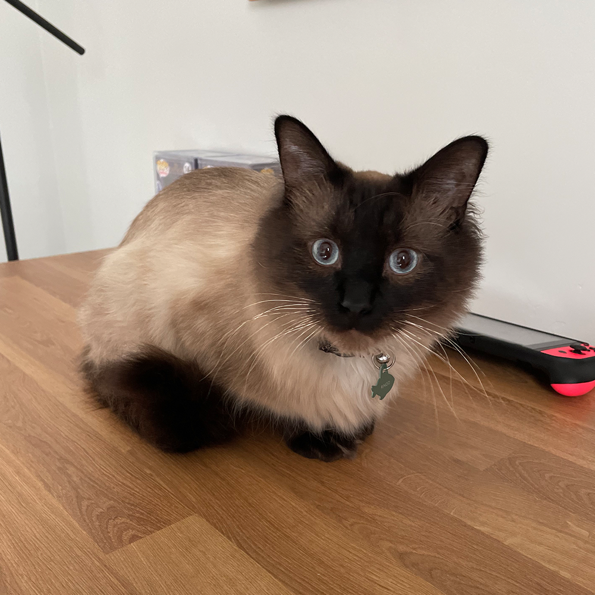

I was born in the small country of Uruguay, specifically in the capital Montevideo. I was really lucky to grow up there because there’s so much to love about my country, from the amazing beaches to the Incredible food we have.
One of the most popular sports in my country is soccer, but I honestly don’t like it that much. My favorite sport is Volleyball, and even though I was the only member of my high school volleyball team, I enjoyed every second I spent in the court playing.
Uruguay is ranked first in Latin America in democracy, peace, low perception of corruption and is first in South America when it comes to press freedom, size of the middle class and prosperity. On a per-capita basis, Uruguay contributes more troops to United Nations peacekeeping missions than any other country. It tops the rank of absence of terrorism, a unique position within South America. It ranks second in the region on economic freedom, income equality and per-capita income.
I am very proud to be Uruguayan!
Drinking mate
Going to the Tablado during Carnival
Eating Asado
Watching and playing futbol (soccer)
Eating Torta Fritas on rainy days
Playing truco